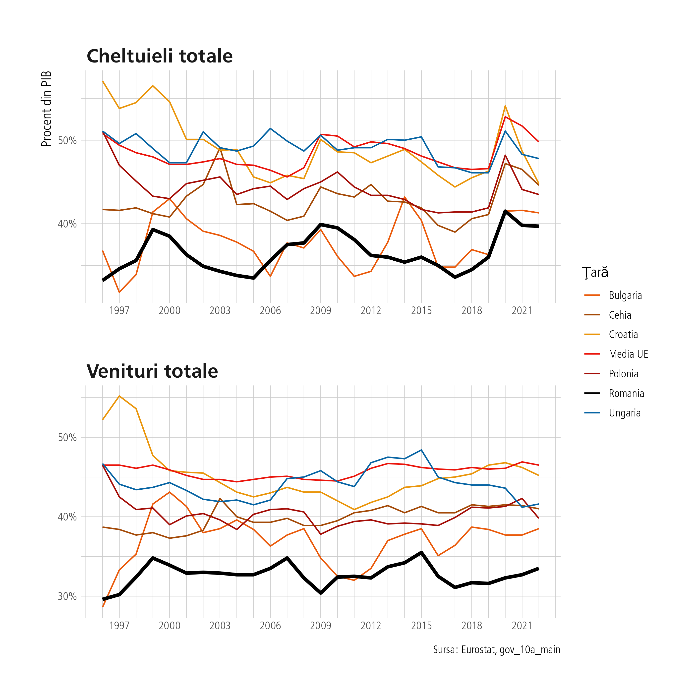
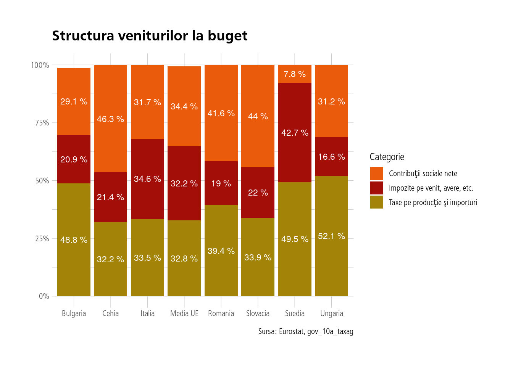
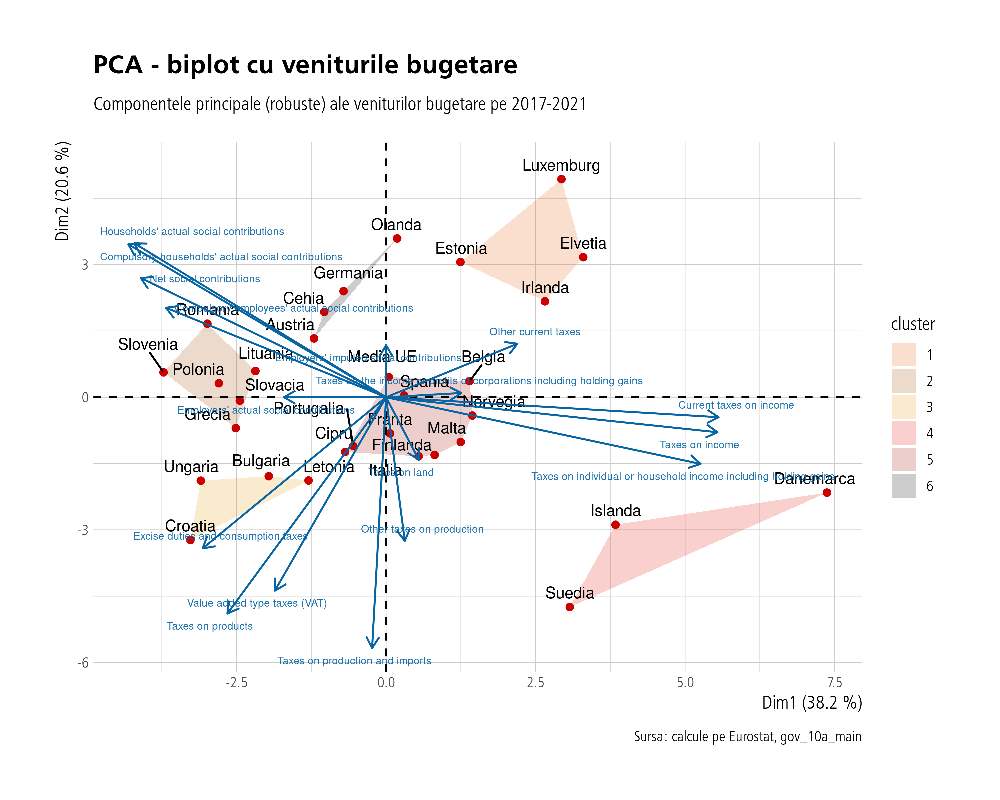
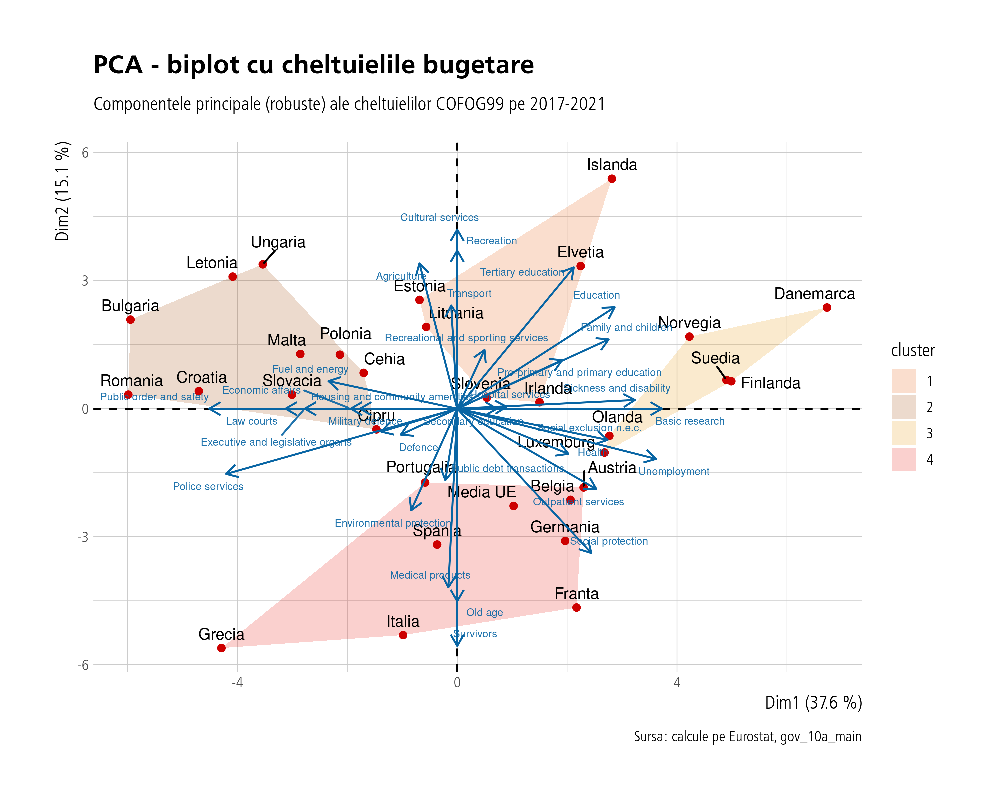
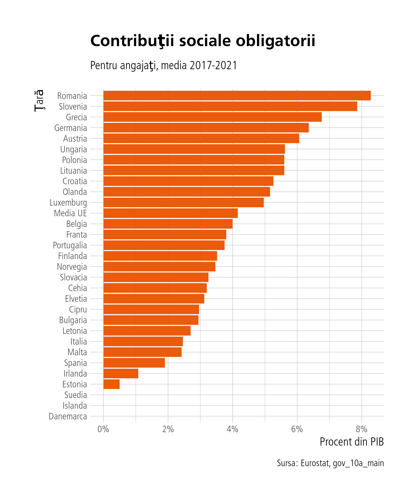

1 Generalităţi
1.1 Venituri şi cheltuieli totale
Vom folosi în general în acest document filele Eurostat gov_10a_taxag pentru taxe şi venituri şi gov_10a_exp pentru cheltuieli şi gov_10a_main pentru agregatele principale ale finanţelor publice.

Se observă clar din grafic că unde nu excelează deloc România este categoria veniturilor. Cheltuielile sunt şi ele la coada clasamentului, chiar pentru Europa de Est. Să vedem veniturile totale fiscale.

Să vizualizăm pe axa cheltuieli totale vs venituri totale cum stăm, însumând anii 2012-2022. Mărimea etichetei din grafic reprezintă mărimea excedentului sau, după caz, a deficitului bugetar. România iese la iveală uşor.

Şi un tabel în ordinea descrescătoare a deficitului bugetar.
| Media anilor 2012-2022 a balanţei bugetare | |||
| Ţări | Cheltuieli totale | Venituri totale | Balanta |
|---|---|---|---|
| Spania | +45.76% | +39.82% | −5.95% |
| Franta | +57.36% | +52.94% | −4.43% |
| Grecia | +53.60% | +49.19% | −4.41% |
| Italia | +51.69% | +47.45% | −4.24% |
| Slovenia | +48.44% | +44.54% | −3.90% |
| Romania | +36.70% | +32.83% | −3.87% |
| Ungaria | +48.41% | +44.88% | −3.53% |
| Belgia | +54.45% | +51.08% | −3.37% |
| Portugalia | +46.94% | +43.56% | −3.37% |
| Polonia | +43.02% | +40.14% | −2.88% |
Concluzia acestei secţiuni este că nu cheltuielile sunt mari, într-adevăr cu greu ar putea fi tăiate şi mai mult, ci veniturile sunt foarte mici. Doar Irlanda, Elveţia şi Lituania au venituri din PIB mai mici ca noi făcând media ultimilor 10 ani. Pentru anul 2022 România a avut cel mai mic procent din PIB ca venituri, în afară de Irlanda.
1.2 Taxarea capital - muncă conform Băncii Mondiale
Există un nou set de date de la Banca Mondială care permite compararea ratelor de taxare efectivă pe capital şi muncă de-a lungul ţărilor şi anilor. Să vedem evoluţia în cele patru ţări din zona noastră.

1.3 Categorii de impozite pe venit
Vom vizualiza profile de ţări după veniturile şi cheltuielile lor ca procent din PIB. Acest lucru ne ajută pentru a ne face o idee despre diversele moduri în care cheltuie sau colectează ţările europene banii la buget. Vom aplica metodologia PCA (“Principal Component Analysis” sau “Analiza componentelor principale”) pentru a reduce dimensionalitatea de la un set cu număr mare de variabile originale (categorii de venituri sau cheltuieli, după caz) la doar două axe principale care reprezintă o hartă a similarităţii ţărilor considerând variabilele originale. Important, vom folosi versiunea robustă, insensibilă la outlieri, nu cea originală. Axele sunt ecuaţii liniare, simple funcţii liniare compuse din variabile originale, coeficienţii fiind calculaţi în aşa fel încât axele noastre să surprindă cel mai mult cu putinţă din variaţia variabilelor originale.
Să începem cu veniturile. Avem 34 de variabile originale pe care le vom reduce la cele două axe principale. Împreună cele două axe explică 58.8 % din variabilitatea datelor originale (vezi valorile din paranteză). Cu albastru avem contribuţia variabilelor originale la axele noastre afişate. Practic putem explica de ce România este în poziţia în care este observând săgeţile albastre ce bat înspre ea: contribuţiile sociale ale angajaţilor. Asta însemnă că ţările din direcţia asta (est-europene şi baltice în general) au un procent din PIB mai mare colectat în această categorie de venituri. Culorile reprezintă clusterii descoperiţi de metodologia k-means.

Să vedem şi la cheltuieli. Aici putem folosi 71 de variabile originale din setul original furnizat de Eurostat. Fiind un set mai mare, este de aşteptat că avem mai puţină variabilitate explicată de aceste două axe (circa 52. 7 %). Dar profilele sunt foarte clare: România cheltuie asemenea ţărilor est-europene şi baltice, doar că pe poliţie, ordine publică (unde suntem locul 4 în Europa ca procent din PIB), cheltuieli cu organe legislative şi executive, apărare, etc. La polul opus sunt statele progresiste cu cheltuieli pe protecţie socială, sănătate, educaţie, etc.

Ghidându-ne după aceste grafice putem face analize punctuale mai interesante. De exemplu, care este topul ţărilor care colectează venituri din contribuţii sociale ?

România este prima, lucru care şi explică poziţionarea ei în direcţia acestei variabile pe biplotul cu venituri. La contribuţiile sociale ale gospodăriilor suntem pe locul 3, lucru de aşteptat întrucât aşa cum arată şi biplotul, ele sunt variabile corelate între ele (săgeţi apropiate ca poziţie şi magnitudine înseamnă variabile bine corelate).
Să rămânem însă la impozitele pe venit. Graficul următor este relevator.

E interesant de văzut şi evoluţia acestei categorii.

1.3.1 Impozitul pe profit
Era de aşteptat, România taxează profiturile mai puţin decât media europeană, dar nu cu mult.

Graficul următor e doar pentru noi, nu l-aş include în raport.

Se pare că doar din impozitul pe venit putem creşte vreo 8 puncte procentuale. Să vedem aceleaşi date sub formă de tabel.
| Diferenţa dintre media europeană şi România la veniturile din taxe | |||
| taxa | Media UE | Romania | Diferenta |
|---|---|---|---|
| Current taxes on income, wealth, etc. | 13.3% | 5.2% | 8.1% |
| Taxes on income | 12.8% | 4.8% | 8.0% |
| Taxes on individual or household income including holding gains | 9.8% | 2.4% | 7.4% |
| Employers' actual social contributions | 7.3% | 1.0% | 6.3% |
| Net social contributions | 14.3% | 11.3% | 3.0% |
| Taxes on production and imports | 13.6% | 10.7% | 2.9% |
| Other taxes on production | 2.4% | 0.8% | 1.6% |
| Taxes on products | 11.2% | 9.9% | 1.3% |
| Value added type taxes (VAT) | 7.4% | 6.5% | 0.9% |
| Taxes on land, buildings and other structures | 1.0% | 0.3% | 0.7% |
| Taxes on the income or profits of corporations including holding gains | 2.9% | 2.2% | 0.7% |
| Taxes on financial and capital transactions | 0.4% | 0.0% | 0.4% |
| Capital taxes | 0.3% | 0.0% | 0.3% |
| Other taxes on production n.e.c. | 0.3% | 0.0% | 0.3% |
| Stamp taxes | 0.3% | 0.0% | 0.3% |
| Taxes on capital transfers | 0.3% | 0.0% | 0.3% |
| Taxes on insurance premiums | 0.3% | 0.0% | 0.3% |
| Excise duties | 0.4% | 0.2% | 0.2% |
| Other current taxes | 0.5% | 0.3% | 0.2% |
| Other current taxes n.e.c. | 0.2% | 0.0% | 0.2% |
| Other taxes on specific services | 0.2% | 0.0% | 0.2% |
| Taxes and duties on imports excluding VAT | 0.4% | 0.2% | 0.2% |
| Taxes on imports excluding VAT and import duties | 0.4% | 0.2% | 0.2% |
| Taxes on products, except VAT and import taxes | 3.4% | 3.3% | 0.1% |
| Other taxes on income n.e.c. | 0.1% | 0.0% | 0.1% |
| Payments by households for licences | 0.2% | 0.1% | 0.1% |
| Taxes on lotteries, gambling and betting | 0.1% | 0.0% | 0.1% |
| Employers' imputed social contributions | 0.9% | 0.8% | 0.1% |
| Taxes on pollution | 0.2% | 0.3% | −0.1% |
| Taxes on winnings from lottery or gambling | 0.0% | 0.2% | −0.2% |
| General sales or turnover taxes | 0.0% | 0.3% | −0.3% |
| Excise duties and consumption taxes | 1.9% | 2.8% | −0.9% |
| Households' actual social contributions | 6.0% | 9.6% | −3.6% |
| Compulsory households' actual social contributions | 5.9% | 9.6% | −3.7% |
| Compulsory employees' actual social contributions | 4.2% | 9.5% | −5.3% |
1.4 Concluzie
Mai avem mult de colectat până să ajungem la media grupului Visegrad, care este ilustrată în tabelul următor:
| Bugetul total pentru România şi Vişegrad | ||||||
| Sursa: Eurostat, gov_10a_main | ||||||
| Anul | Cehia | Polonia | Romania | Slovacia | Ungaria | delta1 |
|---|---|---|---|---|---|---|
| 2012-01-01 | 40.80% | 39.60% | 32.30% | 36.80% | 46.80% | 8.70% |
| 2013-01-01 | 41.40% | 39.10% | 33.70% | 39.60% | 47.50% | 8.20% |
| 2014-01-01 | 40.50% | 39.20% | 34.20% | 40.20% | 47.30% | 7.60% |
| 2015-01-01 | 41.30% | 39.10% | 35.50% | 42.90% | 48.40% | 7.43% |
| 2016-01-01 | 40.50% | 38.90% | 32.50% | 40.00% | 45.00% | 8.60% |
| 2017-01-01 | 40.50% | 39.90% | 31.10% | 38.50% | 44.30% | 9.70% |
| 2018-01-01 | 41.50% | 41.20% | 31.70% | 38.70% | 44.00% | 9.65% |
| 2019-01-01 | 41.30% | 41.10% | 31.60% | 39.30% | 44.00% | 9.82% |
| 2020-01-01 | 41.50% | 41.30% | 32.30% | 39.40% | 43.60% | 9.15% |
| 2021-01-01 | 41.40% | 42.30% | 32.70% | 40.10% | 41.20% | 8.55% |
| 2022-01-01 | 41.00% | 39.80% | 33.50% | 40.20% | 41.60% | 7.15% |
| 1 Diferenţa dintre media Vişegrad şi România | ||||||
Observăm că suntem cu circa 7.5 -8 % procente din PIB în urma grupului Vişegrad la veniturile totale, şi asta în vremurile bune. Făcând o medie pe ultimii zece ani, avem o diferenţă de circa 28 miliarde de EURO (nu RON !) faţă de media acestui grup.